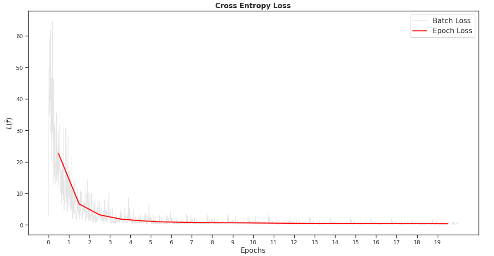

This is a preliminary, hands-on, and maybe useful walk-trough of a sequential neural network in PyTorch. This is a summary of some notes I have been taking while reading about different topics in machine learning, see Refs. [1-3].
Suppose one has data that consists of an independent vector $\mathbf{x}$ and a dependent vector $\mathbf{y}$ such that $\mathbf{y} = f(\mathbf{x})$ for some function $f$. Let say we knew the set $(\mathbf{x}, \mathbf{y})$ then we could guess what the function $f$ is. If vector $\mathbf{x}$ contains the entire domain of $f$ then we are done, but if $\mathbf{x}$ only contains part of the domain then the problem of estimating $f$ becomes more elusive. Let $\widehat{f}$ denote an estimation of $f$.
Introduce the Lost Function $L$, which takes an estimation $\widehat{f}$ and returns a value corresponding to wether or not the estimate is ‘good’ or ‘bad’. For instance, let $$ L(\widehat{f}) = \sum_{i\in I}\bigg[\widehat{f}(x_i)-y_i\bigg]^2 $$ with $|I|$ beign the number of entries in the vectors $\mathbf{x}$ and $\mathbf{y}$, and $(x_i, y_i)\in (\mathbf{x},\mathbf {y})$. Then $L$ will be close to zero if the evaluated values of the estimated function $\widehat{f}$ is close to the values of the dependent vector $\mathbf{y}$. If $L(\widehat{f})=0$ then $\widehat{f}$ equals $f$ on the resticted domain covered by $\mathbf{x}$. However, note that this does not imply that $\widehat{f}$ approximately equals $f$ outside the domain covered by $\mathbf{x}$.
If we knew that $f$ is linear then we might guess that $$ \widehat{f}(\mathbf{x}) = a\mathbf{x} + b, $$ with $a$ and $b$ being matrices ($b$ is often called bias). Given a set $(\mathbf{x},\mathbf{y})$ we could then find the matrices that minimizes som lsot function $L$ with $\widehat{f}$ given by the linear form above. However, when considering a general $f$ then one good approach is to modify the above expression slightly such that more free paramaters are introduced.
Activation Function#
Take the expression above and alter it in the following way $$ \widehat{f}(\mathbf{x}) = R[af(\mathbf{x}) + b] $$ with $R$ being a activation function and has the property that it is slightly non-linear. For instance, take $R(x) = x$ for $x\geq 0$ and otherwise $R(x)=0$, then the estimate $\widehat{f}$ is made non-negative by the action of $R$. This specific activation function is called the Rectifier function. The output values can always be scaled and altered to be non-negative, so this is an equivalent problem. What this activation function introduces, with it being non-linear, is the possibility to introduce more free paramters. That is, consider the following estimate $$ \widehat{f}(\mathbf{x}) = a_2R\big[ a_1 \mathbf{x}+b_1\big]+b_2 = [\widehat{f}_2\circ \widehat{f}_1](\mathbf{x}) $$ with $\widehat{f}_i=R[a_i\mathbf{x}] + b$. Note that if the activation function were linear there would exist $a_3$ and $b_3$ such that $$ [\widehat{f}_2\circ \widehat{f}_1](\mathbf{x}) = a_3R[\mathbf{x}] + b_3, $$ not introucing more free parameters. In general one can write $$ \widehat{f}(\mathbf{x}) = [\widehat{f}_N\circ\dots\circ \widehat{f}_1](\mathbf{x}) $$ with each function given by $$ \widehat{f}_i(\mathbf{x}) = R(a_i\mathbf{x}) +b_i. $$
Data#
We will be investigating data consisting of the weight and length of 9 different species of fish found HERE. The first $75~%$ of the row will constitute the training data and the rest the test data. We will use the training data to alter the weighhts of the neural network, then test our resulting model on the test data. In utils.py there are some helpful functions that keeps the cluttering in this document to the minimum. Importing everthing from utils.py we can for the training and test datasets.
Neural Networks#
Inspired by the structure of biological neural network a neural network in maachine learning is a model consisting of connected units of nodes. For a given input this model produces an output based on weights that is altered to yield the best output. In our case, we will adapt the structure given by the PyTorch library where the data is loaded into a so-called Dataloader which will be explained later. This simplifies the tracking of all the operations that needs to be made in the model.
The question remains how the parameters should be choosen such that the result of our estimet $\widehat{f}$ as closely as possible resemmbles the unknown function $f$. With our loss function $L$ defined, we know that a small value of $L$ will result in a better estimate. Our goal is therefore to minimize $L$· With a sequmential neural network shown above where we choose the estimate to have the form $$ \widehat{f}(\mathbf{x}) = [\widehat{f}_N\circ\dots\circ \widehat{f}_1](\mathbf{x}) $$ with $$ \widehat{f}_i(\mathbf{x}) = R(a_i\mathbf{x}) +b_i, $$ we see that the loss function must be a function of the parameters $(a_i)_{nm}$ and $(b_i)_{nm}$ of the matrices $a_i$ and $b_i$. Thus, if we update the parameters such that $$ (a)_{nm} \to (a)_{nm} - \partial L/\partial (a)_{nm} , ~~(b)_{nm} \to (b)_{nm}- \partial L/\partial (b)_{nm} $$ this will converge to the values of $a_i$ and $b_i$ such that $L$ is minimized, given that $L$ is convex with respect to the $a_i$’s and $b_i$’s.
In PyTorch#
In PyTorch one can inherite many practical attributes from the nn.Module class, as shown below. Here I initilize a matrix of size $2\times N$ for some $N\in\mathbb{Z}$, then a number of ‘‘middle’’ matrices are created of size $N\times N$, and lastly a matrix of size $N\times 9$ is created. The neural network will now, in the forward method do the following
- Take the input $\mathbf{x}$ and multiply it with matrix $M_1$ of size $2\times N$ and add a bias $b_1$ (remember $\mathbf{x}$ is a vector with columns [Weight, Length] of all the different fish species and with 75 % of the number of rows of all the data);
- Apply the rectifier function to the result $M_1\mathbf{x} + b_1$;
- Do step 1) and 2) but for the middle matrices of size $N\times N$ for some number of times;
- Multply the result with the matix $M_2$ of size $N\times 9$ and adding a bias vector $b_2$ yielding a vector of size $9$ corresponding to indeces of the label set.
class NeuralNetwork(nn.Module):
def __init__(self,num_matrices=3,inner_matrix_size = 100):
super().__init__()
self.Matrix1 = nn.Linear(2,inner_matrix_size)
self.Matrices = [nn.Linear(inner_matrix_size,inner_matrix_size) \
for i in range(num_matrices)]
self.Matrix2 = nn.Linear(inner_matrix_size,9)
self.R = nn.ReLU()
def forward(self,x):
x = x.view(-1,2).float()
x = self.R(self.Matrix1(x))
for Matrix in self.Matrices:
x = self.R(Matrix(x))
x = self.Matrix2(x)
return x
Creating an instance f of the neural network will initiate random initial values to all paramters of the values. Also, note that the vector $b_i$ is never mentioned in the NeuralNetwork class, this vector is implied and one has to specifically specify ...,bias=False in the nn.Linear(...) method to not include the bias vector.
num_matrices = 1
inner_matrix_size = 2500
f = NeuralNetwork(num_matrices,inner_matrix_size)
Here we have created a neural network with one ‘‘middle’’ matrix of size $2500\times 2500$. Our neural network therefore contains $2500\times 2500 + 2500\times 2 +2+ 2500\times 9 + 9 = 6277511$ parameters (!).
Pytorch’s DataLoader#
The datasets train_ds and test_ds has the columns [Species, Weight,Length] and the following number of rows
test_ds : 1019
train_ds: 3061
We will train the model with the training data in batches of a set size. This means that the adjusting of the parameters of the model is parallelized over the batches, making the training process quicker. Furthermore, the model will be trained several so-called epochs over the same training data. This means that the the output of the first adjustment of the paramters looping through all the training data will be used as input in the next epoch adjusting the parameters once again over the same data. This is most easily done with PyTorch DataLoader class, where the size of each batch can be specified.
train_dl = DataLoader(train_ds, batch_size=20)
Training#
For a chosen loss function $L$ in our case we choose the Cross Entropy Loss, and a way of calculating the gradient, we chose the Stochastic Gradient Decent, the training consists of adjusting the parameters for each batch over all the epochs.
num_epochs = 20
opt = SGD(f.parameters(), lr = 0.01)
L = nn.CrossEntropyLoss()
losses = []
epochs = []
predicted_test =[]
predicted_train =[]
for epoch in range(num_epochs):
print(f'Epoch {epoch}/{num_epochs-1}')
for i, (x,y) in enumerate(train_dl):
opt.zero_grad() # flush gradient
loss= L(f(x),y)
loss.backward()
opt.step()
losses.append(loss.squeeze().detach().numpy())
epochs.append(epoch + i/len(train_dl))
predicted_test.append(f(test_ds.x).argmax(axis=1).numpy())
predicted_train.append(f(train_ds.x).argmax(axis=1).numpy())
Results
Below we see the loss function over all epochs and batches. It is slowly decreasing, meaning that our estimate gets better at recreating the true values of the training data.
But what we really care about is how well the model describes data it has not yet seen, i.e. the test_data.
Above is for the training data, which we would expect the model to be able to describe (it has already seen it many times!). Of all the training data, the best model where able to label 80.08 % of the fish specis correctly and 19.92 % incorrectly.
Below is the amount of correct predictions for the training data (data the model has not yet seen).
Accually, for the test data the same percentage of correct and incorrect labeling were produced, which seems a bit odd. it kind of seems that the model is not able to attain the data characteristics fully and sort of asymptotes to some best version of this specific model. Looking closer at what species the model has trubble labeling below,
we see that the model never really gets the labeling of Otolithoides biauritus and Setipinna taty right. Since they account for abut $21~%$ of the test_data it makes sense why the amount of correct predictions never really gets higher than about $79~%$. However, it is not yet clear why the model has so much trubble predicting the species name of these specific species. Well, looking at the data for these two species,
we see that they are very similar in weight and length and given a velua of the weight and length, it is basically 50/50 whihc label between the two the model will choose.
We can test to remove one of them and retrain the data on the subset of data containg all but the species Otolithoides biauritus. That is , we consider the following data set.
Training with this data set for the same parameters we get the loss function behaviour below.

And the amount of correct guesses is accually a bit better.
Of the total number of labels of the test data, the best model were able to label 88.25 % correctly and just 11.75 % incorrectly.
Conclusions#
We have here briefly describe the logic behind sequential neural networks. The logic is quite easy to follow, but precisly how the system paramters translate to accual weights and lengths of different fish specimen are still a mystery. Looking at all these results I would also have expected much better performance of the model when only considering the data set in Fig. [X] considering that the data clouds are quite distinct from each other. In this specific task even I would perform better than the model. I have not specifically explained how the Cross Entropy Loss function works (or even how it is defined) and not what the Stochastic Gradient Decent is. But I will leve this here and possibly go into further details in the future.
References#
- Neural Networks and Deep Learning, Nielsen, Michael A.
- Understanding Machine Learning: From Theory to Algorithms, Shalev-Shwartz, Shai and Ben-David Shai
- PyTorch Course (2022), Part 1-3, Mr P Solver Link